{kind=link}
Trosky
Des rochers, de la forêt, des rivières et des lacs, venez découvrir les charmes du Paradis Bohème, ci-dessous pas mal d'infos, vous en trouverez aussi beuaocup sur le site officiel du Paradis Bohème Cesky Raj en anglais.
Vous pourrez tout visiter sur à pieds !
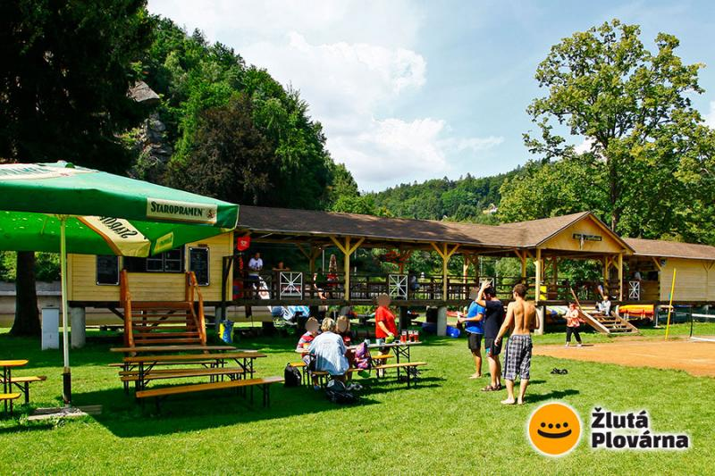Allez profiter de la rivière Jizera sur cette pelouse, ou en empruntant vélo, trottinettes ou canoës dans la maison jaune. Allez faire un tour sur le site internet
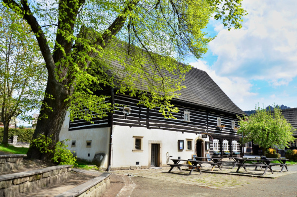Venez vous régaler de plats typiques dans ce restaurant au bord de la Jizera (encore elle !) www.hostinecuboucku.cz/
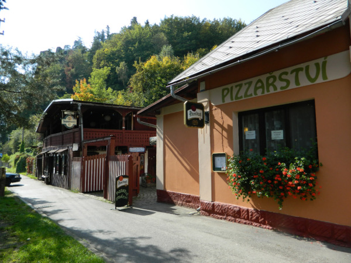Venez déguster les meilleures pizzas de Malá Skála, sur place ou à emporter ! pizzamalaskala.cz
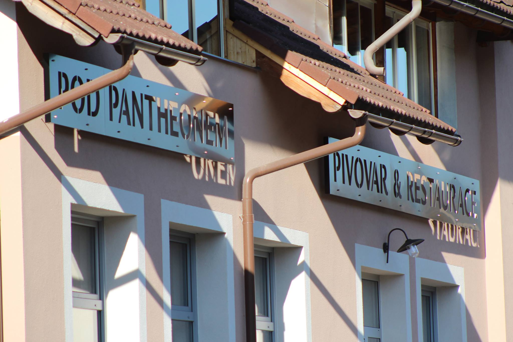Petr dira que ce n'est pas la meilleure bière de Tchéquie, mais une brasserie à côté de la maison, c'est quand même toujours utile, surtout quand on y mange bien et que la vue sur le Pantheon depuis la terrasse est belle !
MaláSkálaPivovarPour visiter les lieux suivants, il vous faudra de bonnes jambes ou un vélo !
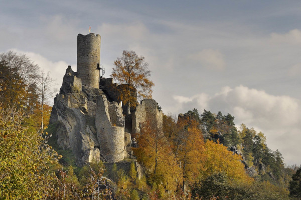Tout en haut de la crête du Panteon le château de Frydstejn surplombe les deux vallées. Site du château pour organiser votre visite
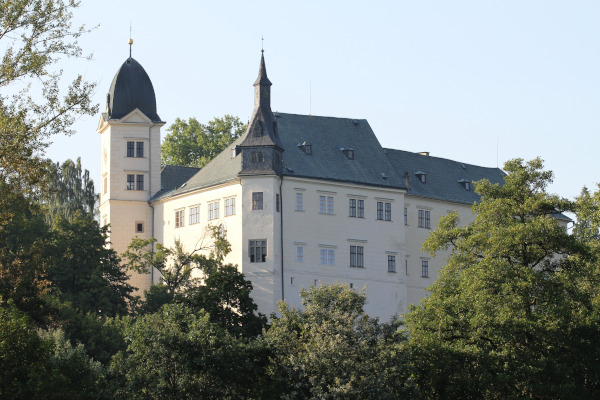Un des ces nombreux châteaux de la région, la brasserie est très bonne aussi, conseil de Lucie ! site internet
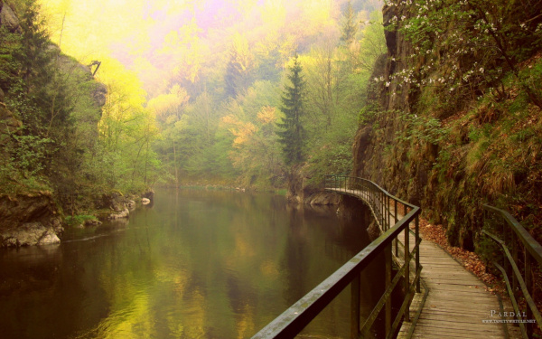Un beau chemin le long de la Jizera pour 3 heures de marche tranquille (11km). L'aller ou le retour peuvent se faire facilement en train, demandez nous les infos !
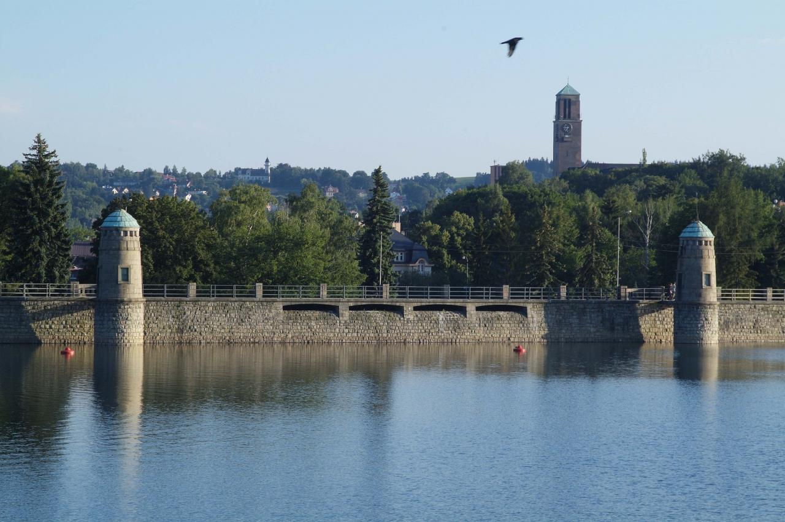Venez faire comme Lucie quand elle était étudiante et profiter des plages du barrage de Jablonec ou admirer cette oeuvre de génie civil (page wikipedia du barage).
Vous pouvez aussi profiter de la piscine juste à côté ! Salomé a testé avec succès le toboggan ! site internet de la piscine (Basen en tchèque)
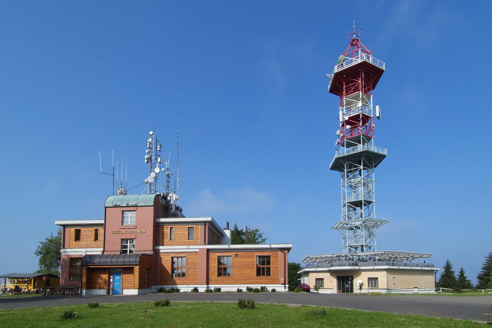Montez voir la belle vue sur les environs. Les plus téméraires peuvent descendre en skateboard et s'entraîner pour le Kozakov Challenge ! Les autres peuvent plutôt boire un verre au restaurant !
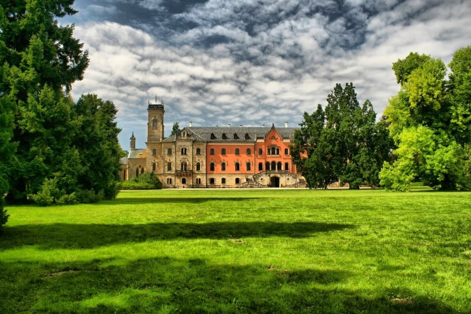Le château de Sychrov vous accueille pour une visite ou juste une promenade dans les jardins, plus d'infos sus cette page (en français !) site internet (en français)
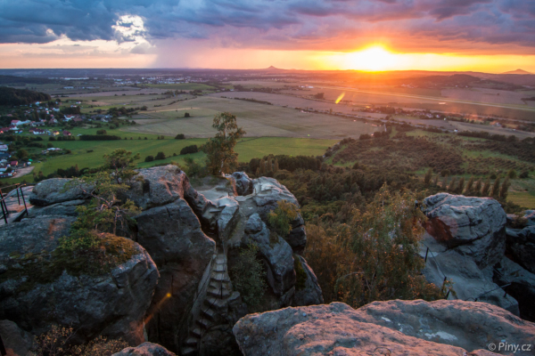Si vous n'avez pas le vertige, ou pour les férus d'escalades, venez grimper sur ces gros rochers abritant autrefois de véritables villes. site inter (en tchèque)
Pour visiter les lieux suivants, mieux vaut un moteur sous le capot !
Un château construit sur deux volcans, bien reconnaissable dans le paysage ! site internet (en anglais)
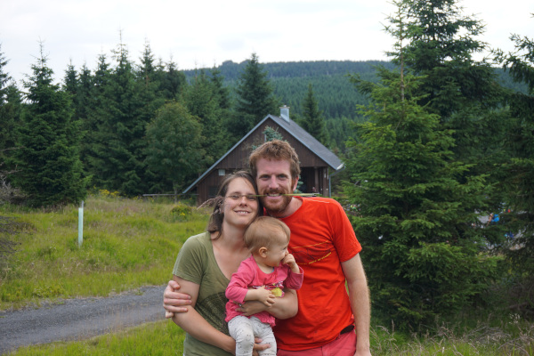Un superbe endroit pour faire de grandes balades à pieds ou en vélo. Vous pouvez faire une pause gastronomique au Šámalova chata. site internet (en anglais)
A Mladá Boleslav, monsieur Škoda a fondé la marque de voiture qui allait être célèbre ! Le saviez-vous ? Škoda signifie aussi dommage en français !
site internet (en anglais) Kost signifie os, pour monter que ce château était dur comme un os ! Il a accueilli des activités peu recommandables (de la torture entre autre), rassurez-vous, vous pouvez le visiter et repartir libres !
site internet (en anglais)
Kost signifie os, pour monter que ce château était dur comme un os ! Il a accueilli des activités peu recommandables (de la torture entre autre), rassurez-vous, vous pouvez le visiter et repartir libres !
site internet (en anglais)
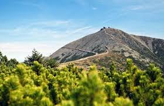Venez gravir les pentes de la montagne la plus haute de Tchéquie, Sněžka, la neigeuse. site internet (en anglais) !
Autant profiter aussi, si vous avez le temps, des lieux emblématiques de la Tchéquie. La liste est longue, selon vos envies, demandez-nous plus d'infos pour préparer vos expéditions !
{kind=link}
{kind=link}
{kind=link}
{kind=link}
{kind=link}
{kind=link}
{kind=link}
{kind=link}